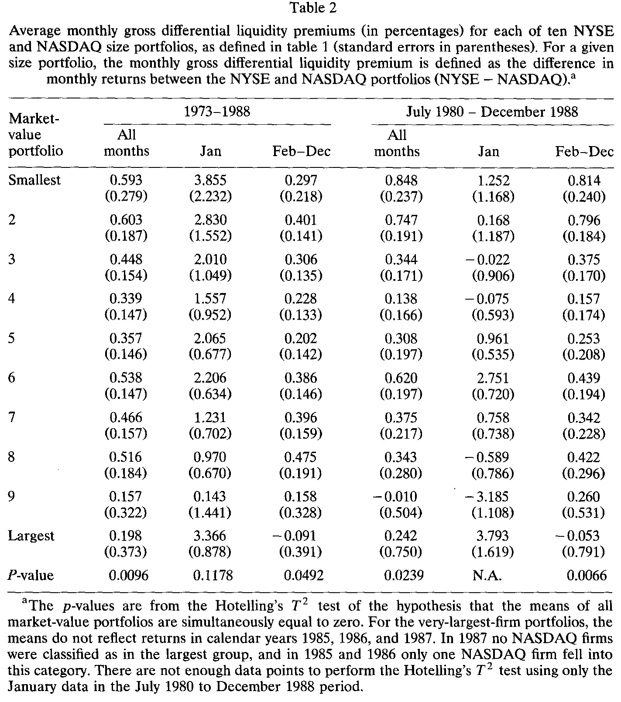
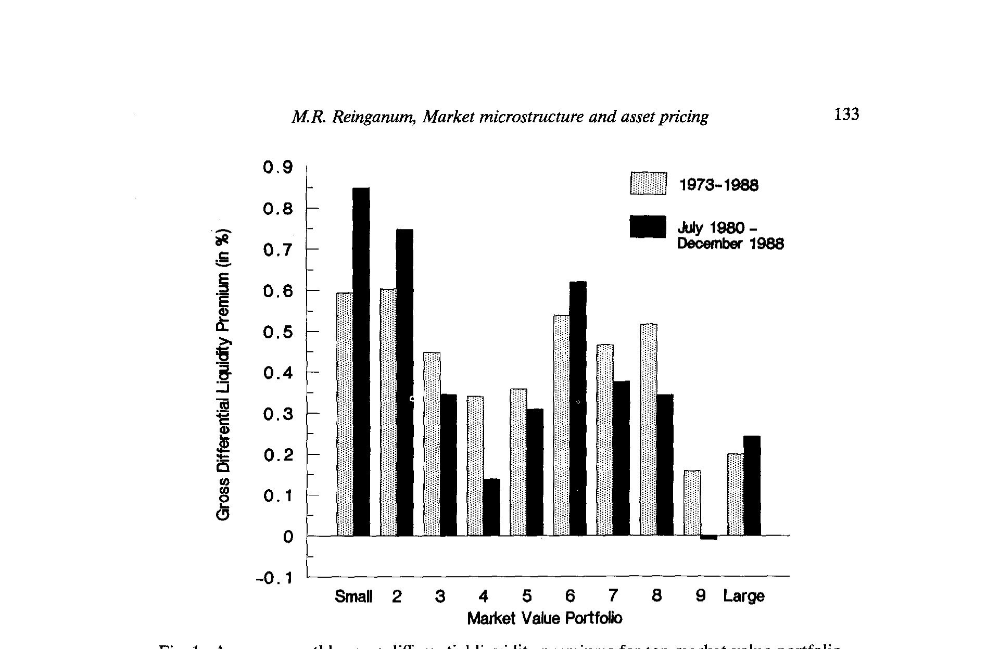
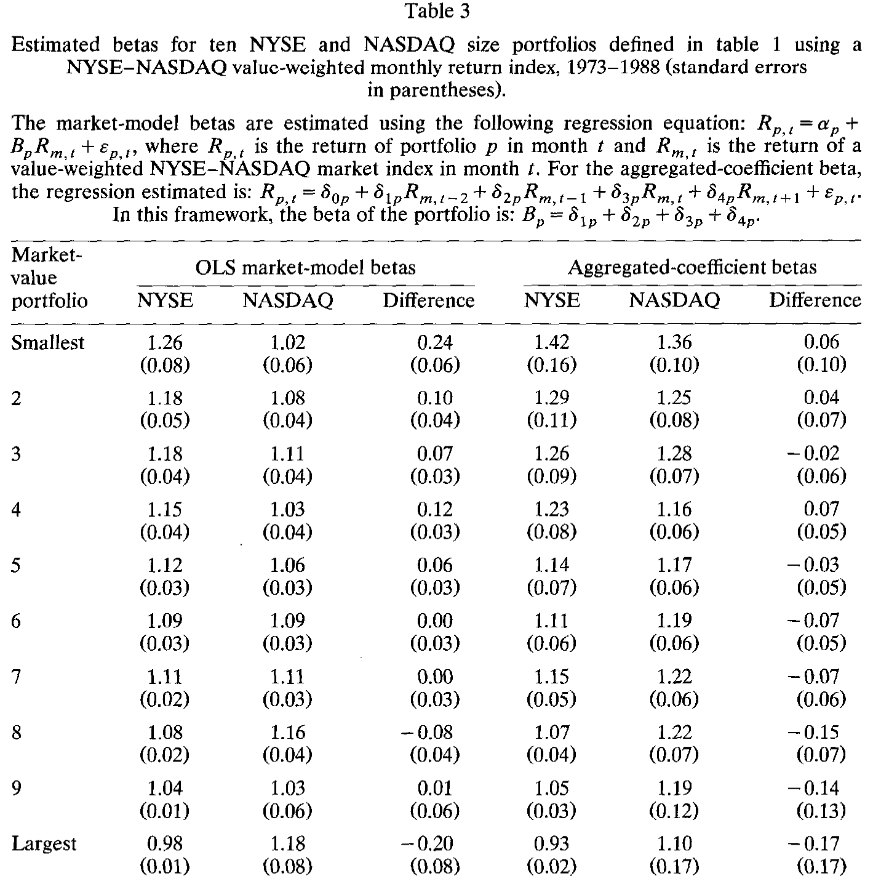
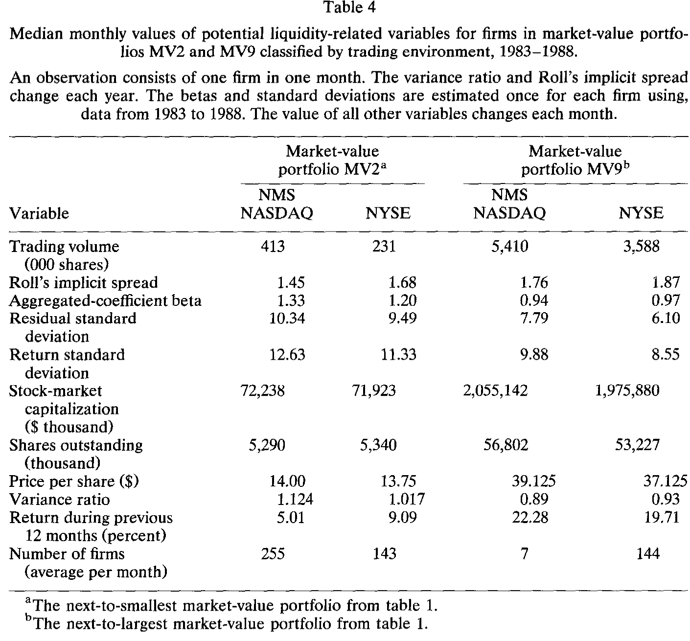
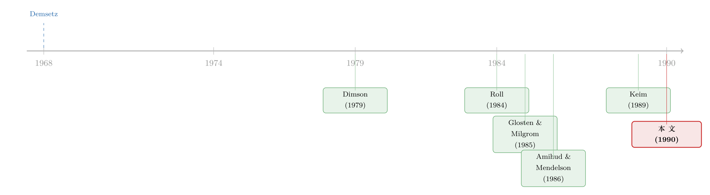

两个交易所，谁的「流动性」更便宜？——一场从月度收益里反推出的较量
本文读的是 Reinganum (1990, Journal of Financial Economics)：作者不去测买卖价差，而是从 NYSE 与 NASDAQ 同等规模股票的月度收益之差里，反推两种市场结构（垄断的专家系统 vs. 竞争的多做市商系统）谁提供的流动性更便宜。结论是——在小公司里，NASDAQ 的月度收益比 NYSE 低约 0.6%，意味着 NASDAQ 的流动性溢价更低、流动性更好；但这种优势随公司变大而消失，到最大的那一档便荡然无存。没有哪一种市场结构全面胜出。
1 一个被「短视」困住的问题
关于做市商的研究，几乎都被一种「短视」绑住了。
自 Demsetz (1968) 那篇开创性的工作点燃了人们对纽约证券交易所（New York Stock Exchange, NYSE）专家（specialist）所提供的交易服务的兴趣以来，几十年的文献——Tinic、Stoll、Glosten、O'Hara——都把目光死死盯在极短的时间尺度上：买卖价差（bid-ask spread）、做市商库存、逐笔的价格跳动、成交量。这些当然重要。但它们说的都是「这一秒钟」的故事。市场微观结构对长期价格行为的影响，几乎被完全忽略了。
这就是张力所在。我们直觉上相信「交易成本会影响资产价格」，可一旦真要把这件事拿到月度、年度的尺度上去验证，文献却几乎是空白的。
首先要问的，自然是：交易成本这种「微观」的东西，凭什么会渗进「宏观」的长期收益里？
转折发生在 Amihud and Mendelson (1986)。他们第一次把市场微观结构和资产定价显式地焊在了一起：在他们的理论里，预期资产收益是非流动性 (illiquidity) 的增函数——流动性越差（用相对买卖价差衡量），投资者要求的预期收益越高。换句话说，价差不只是一笔一次性的成本，它会被「资本化」进股票的长期收益里。流动性差的股票，必须用更高的预期收益来补偿持有者。（关于用价差与非流动性来定价的这条线，可参见《想买走一家公司千分之一的股票，得把价格推高百分之一》。）
接着，一个非常漂亮的推论冒了出来。如果 Amihud-Mendelson 模型是对的——即在控制了 beta 和规模之后，预期收益之差就反映了流动性之差——那么我们其实可以反过来用这个模型：不必去拿到买卖价差的数据，单凭股票收益，就能「倒推」出两组股票之间的流动性溢价差异。
本文做的，正是这件事。
2 核心思路：把「流动性」从收益里减出来
作者要回答的具体问题是：两种截然不同的市场结构，谁提供的流动性更便宜？
一边是 NYSE 的专家系统——一只股票只有一个垄断的做市商（specialist）。另一边是 NASDAQ 的多做市商系统（multiple-dealership market）——同一只股票有多个交易商竞争报价。一个是垄断，一个是竞争。教科书的直觉会说竞争更好，但这是个实证问题。
全文的「一个核心」就是这个毛流动性溢价差 (gross differential liquidity premium, GDLP)：把规模大致相当的 NYSE 组合月度收益，减去 NASDAQ 组合的月度收益。如果两边的风险和流动性都一样，按 Amihud-Mendelson，这个差应当为零。它不为零的部分，就是两种市场结构在「流动性定价」上的分歧。
但真正关键的一步在于控制规模。为什么？因为「公司规模」几乎是流动性最顽固的代理变量——Cohen et al. (1977) 把市值当作「稀薄程度」的反向度量，Roll (1984) 发现隐含价差与规模强负相关，Amihud-Mendelson 干脆把规模当作流动性的代理。所以，要干净地比较两个交易所，必须先把规模这只「拦路虎」摁住。
作者的做法是：每年末，把所有 NYSE 股票按市值排序，分成 10 个等数量的十分位组合（每组约 148 家公司）。然后——这一步很讲究——不给 NASDAQ 单独分十分位，而是直接借用 NYSE 的 10 个市值切点，把 NASDAQ 公司装进对应的市值档里。于是 NASDAQ 各档的公司数极不均匀：最小档塞了 1,692 家，最大档只剩 5 家。
光是这张「人口普查」就已经在讲故事了。最小档：NASDAQ 1,692 家 vs. NYSE 148 家；次小档：299 vs. 148。最大档却几乎全在 NYSE。如果上市地点的选择反映了某种最优化行为，那么小公司压倒性地涌向 NASDAQ、大公司压倒性地留在 NYSE——这本身就暗示：NASDAQ 也许更擅长服务小公司，而专家系统更擅长服务大公司。
这里埋着一个隐患：最小档可能仍有规模偏差。最小 NYSE 组合的市值中位数是 $21.6 百万，是最小 NASDAQ 组合（$10.3 百万）的两倍多。所以作者后面把最重的分析放在了次小档（MV2）而非最小档（MV1）——这是个克制而诚实的选择。
3 主要结果：小公司那 0.6% 的差
把每个月、每一档的 NYSE 收益减去 NASDAQ 收益，再在 1973–1988 全样本上取平均，结果是一个漂亮而稳定的横截面模式。
在最小的八档里，GDLP 无一例外地大于零、且至少高出两个标准误。最小档的 GDLP 是每月 0.593%（标准误 0.279）；次小档 0.603%。用 Hotelling's T² 检验「十档均值同时为零」的原假设，在 0.01 水平上被拒绝（p = 0.0096）。而到了最大的两档，GDLP 的点估计落在零的两个标准误之内——差异消失了。

Table 2
这个「随规模递减」的形状，画成图就是图 1 那条从左上往右下滑的曲线：小公司处 GDLP 高企，往大公司一路衰减，到最大档归零。

Figure 1: Average monthly gross differential liquidity premiums for ten market-value portfolio
然后，一个自然的质疑是：会不会是早年 NASDAQ 报价不准造成的假象？毕竟 1980 年 7 月之前，NASDAQ 报的是「代表性」买卖价，之后才开始传输内部报价 (inside quotations)——最高买价与最低卖价。作者把样本切到 1980 年 7 月之后重做，结果更刺眼：小公司的 GDLP 不降反升——次小档从全样本的 0.603% 升到了 0.747%。所以这不是坏数据的产物。
还有一个更狡猾的质疑：会不会只是一月效应？历史上小公司的超额收益常常扎堆在一月。在 1973–1988 全样本里，确实有三分之一到一半的年化 GDLP 在一月实现。但在 1980 年 7 月之后的子样本里，大部分 GDLP 来自非一月月份——次小档二月到十二月平均 0.796%/月，而一月只有 0.168%。既然后半段数据更准，那么「流动性的定价效应没有年关效应」也许才是它真实的时间序列特征。（一月里到底是谁在换仓，可另见《一月效应背后，是谁在悄悄换仓？》。）
4 但这会不会只是风险（beta）？
到这里，最致命的一个反驳浮出水面：GDLP 之差，会不会根本不是流动性，而是 beta（风险）之差？
作者用两种方法估 beta：普通最小二乘（OLS）以及 Dimson (1979) 的聚合系数法 (aggregated-coefficients, AC)——后者专门用来修正非同步交易（nonsynchronous trading）对小股票 beta 的低估。

Table 3
结果是：用 OLS 估，最小档 NYSE 的 beta 是 1.26，NASDAQ 是 1.02，差 0.24。这个差确实能解释一点 GDLP，但绝不可能解释全部。算一笔账就明白了：要让 0.24 的 beta 差去解释 0.593%/月的收益差，资本资产定价模型（CAPM）就得要求一个每月 2.47% 的市场风险溢价——年化近 30%，荒谬。
更妙的是反证：换用 AC 法，beta 差从 0.24 缩到了 0.06。这时要解释同样的 0.593%，隐含的市场风险溢价就要飙到每月 9.88%——更荒谬。无论哪种 beta 估计，风险都吞不下这个收益差。 剩下的，更可能是流动性。
5 收尾的关键一步：直接去找流动性的「指纹」
故事讲到这儿其实已经很有说服力了，但作者还差临门一脚。如果 GDLP 真是流动性差异，那么我们应当能在别的、可直接观测的流动性变量上，看到同方向的差异。于是他把焦点收到两档——次小档 MV2 与次大档 MV9（避开 MV1 的规模偏差，也避开 MV10 经常没有 NASDAQ 公司的尴尬），并只用 NASDAQ 里的全国市场系统 (national market system, NMS) 股票（其价格像 NYSE 一样是成交价，而非买卖中点），时段为 1983–1988。

Table 4
证据一条条对上了：
- 成交量：若 NASDAQ 对小公司流动性更好，它的成交量该更高。事实正是如此——MV2 里 NASDAQ 月度成交量中位数
413,000股，NYSE 只有231,000股。Cowan et al. (1989) 也发现，那些从 NASDAQ 转板去 NYSE 的公司，往往是成交量较低的。 - Roll 隐含价差：Roll (1984) 用价格变动的一阶序列协方差估有效价差。MV2 里 NASDAQ 是
1.45%，NYSE 是1.68%；连 MV9 里 NASDAQ（1.76%）也低于 NYSE（1.87%）。方向一致：NYSE 的隐含价差不比 NASDAQ 低。 - 风险度量：MV2 里 NYSE 的 beta 中位数（
1.20）略低于 NASDAQ（1.33）。但 Table 4 最醒目的特征，其实是同一市值档内、两个交易所的风险度量惊人地相似——这恰恰说明规模是个好的控制变量，也说明把 GDLP 归给风险并不可信。
至此，三条独立的「流动性指纹」——成交量、Roll 价差、风险——都和从收益里反推出的 GDLP 对上了号。这就是本文最扎实的地方：它不是用一个口径自说自话，而是让收益、成交量、隐含价差互相印证。
于是反转的全貌清晰了：竞争的多做市商系统并没有「全面碾压」垄断的专家系统。NASDAQ 只在小公司那一端更便宜；规模一大，优势就蒸发，到巨头那里甚至反转为 NYSE 占优。 没有赢家通吃。
6 文献脉络
把这条线捋一捋，它的演进逻辑非常清楚。
源头是 Demsetz (1968)——交易成本是做市商提供「即时性」的报价。此后二十年，文献（Tinic 1972、Stoll 1978、Glosten and Milgrom 1985 等）把买卖价差拆解得越来越精细，但始终困在逐笔、短程的尺度里。真正的范式转折是 Amihud and Mendelson (1986)：他们把价差资本化进长期预期收益，让「微观结构」第一次有资格进入「资产定价」的殿堂。

而本文站在一个巧妙的位置上：它不去测价差（那是别人做过的），而是接过 Amihud-Mendelson 的逻辑反向使用——既然控制风险和规模后收益差等于流动性差，那就用收益差当尺子，去丈量两种市场结构。它借来了 Roll (1984) 的隐含价差估计、Dimson (1979) 的 beta 修正、Keim (1989) 关于年关交易模式的洞察，把它们编织成一个对照实验。它的贡献不在于发明新工具，而在于把一个被忽略的长期问题，用既有工具干净地问了出来。
顺带一提，这条「NYSE vs. NASDAQ 收益之差」的公案后来仍在延续——到底是「市场结构」造成的，还是 NASDAQ 样本里塞了太多注定跑输的新股？这正是《纳斯达克跑输的那 6%，是「市场结构」，还是塞满了新股？》接着追问的事。关于专家系统那段「长久关系如何驯服信息不对称」，也可参见《「专家做市商」凭什么特别？》。
7 评论与延伸（Q&A + 研究方向）
(a) 几个可能的疑问
Q：GDLP 是「NYSE 减 NASDAQ」，为正就说 NASDAQ 流动性更好——这个符号逻辑反过来想会不会更顺？
顺着 Amihud-Mendelson 想就对了：流动性差 → 要求的预期收益高。GDLP > 0 意味着 NYSE 收益更高，即 NYSE 股票要求的流动性补偿更高，即 NYSE 在这一档流动性更差。所以「NYSE 收益高」翻译过来正是「NASDAQ 流动性优势」。小公司 GDLP 显著为正，故 NASDAQ 在小公司端胜出。
Q：作者反复强调控制规模，可最小档 NYSE 的市值中位数是 NASDAQ 的两倍多，这不就是残余的规模偏差吗？
是的，作者自己也承认。这正是他把核心分析从 MV1 挪到 MV2 的原因——在 MV2 及以上各档，两个交易所的市值中位数已经「相似」。把最脏的一档让出来，结论反而更稳。这是诚实，不是回避。
Q：beta 用 OLS 还是 Dimson 聚合系数，结论会不会被这个选择左右？
不会，而且这恰是本文的巧思。OLS 给出
0.24的 beta 差，AC 法给出0.06。但两种估计下，要让 beta 差解释掉0.593%/月的收益差，都要求一个荒谬的市场风险溢价（2.47% 或 9.88% 每月）。风险这条解释路径，被两头堵死了。
Q：会不会是早年 NASDAQ 报的是买卖中点而非成交价，把收益算高/算低了？
这是最该担心的数据问题。作者用 1980 年 7 月（NASDAQ 开始传内部报价）和 1982 年 11 月（NMS 用成交价）两个分界点分别重做。结果是小公司 GDLP 在更干净的子样本里更大，而非消失。数据质量不是 GDLP 的来源。
Q：那「最大档 GDLP 归零」是真的没差异，还是因为 NASDAQ 大公司样本太小（只有 5 家）？
两者都有。点估计确实落进零的两个标准误内，方向上支持「大公司无差异」；但大档 NASDAQ 公司极少（最大档仅 5 家，某些年份甚至为零），统计推断本就脆弱。作者很坦白：「大型 NASDAQ 公司的稀缺可能混淆推断。」所以「大公司端无优势」这个结论该读作「证据不足以拒绝相等」，而非「已证明相等」。
Q：这篇 1990 年的结论，在今天电子化、碎片化的市场里还成立吗？
直接外推要谨慎。如今 NASDAQ 早已不是纯粹的电话报价多做市商系统，NYSE 也大幅电子化，两者的微观结构差异远小于 1980 年代。但方法论仍然活着：从控制了规模与风险的收益差里反推流动性溢价，这个思路至今被沿用。结论会过时，工具不会。
(b) 几个可能的研究问题与提案
1. 把同样的「GDLP 反推法」搬到公司债的不同交易场所
【经济故事】公司债是出了名的非流动、且交易高度分散在做市商网络里。如果两只同一发行人、相近久期的债券，一只更多在交易商间市场成交、另一只更多被大型机构持有，它们的收益差是否反映了「流动性溢价差」？这等于把 Reinganum 的「两个交易所」换成「两种持有人/交易渠道」。
【可行性】中。需要 TRACE 逐笔成交 + Mergent FISD 债券特征，识别策略靠「同发行人配对」消掉信用风险（正如本博客多篇外资/流动性研究所用的配对思路）。难点在于债券收益的月度面板噪声大、且交易稀疏——但这恰好也是「流动性溢价」该最显著的地方。
2. 外资持有人会不会自己「挑」流动性更好的交易场所？
【经济故事】本文揭示了小公司「用脚投票」涌向 NASDAQ。一个自然的延伸：在跨境层面，外国机构投资者是否系统性地偏好在流动性更便宜的交易所/板块持有同一家公司的股票？如果是，他们的进入本身会不会反过来改善该板块的流动性溢价（内生性）？
【可行性】中。需要 FactSet/EPFR 的国别持仓 + 多地上市（cross-listing）样本，用「同一公司两地挂牌」做配对，识别外资份额与 GDLP 类指标的关系。挑战是外资份额与流动性互为因果，需要一个外生的「可投资度」冲击（如指数纳入）来破内生。
3. 用「市场结构改革」做一次真正的双重差分
【经济故事】Reinganum 的横截面对照终究不是因果。但历史上有不少交易所规则的离散变更（如 1980 年 NASDAQ 启用内部报价、后来的小数报价改革），把某一类股票从一种微观结构「推」向另一种。把这些事件当作处理，可以做一个干净的双重差分。
【可行性】高。事件日期是公开的，CRSP 月度收益齐全，处理组/控制组按是否受规则影响划分。识别靠平行趋势——而本文已经提供了改革前的横截面基线，正好当作前期检验。这是把一篇优秀的描述性论文升级为因果论文的最直接路径。
4. 流动性溢价的「一月之谜」反转
【经济故事】本文发现：1980 年后，GDLP 的年关效应基本消失。但 Keim (1989) 又记录了 NASDAQ 在年底/年初的系统性买卖价定位偏移。这两件事是矛盾还是互补？把「流动性溢价的季节性」单拎出来，看它在不同市场结构下是否有不同的时间形状，可能藏着关于「谁在年关交易、为什么」的新证据。
【可行性】高。纯用 CRSP 日度数据即可复刻，方法成熟，唯一风险是结论可能只是「规模溢价季节性」的换皮——需要严格控制规模来证明它是流动性特有的。
8 参考文献
我的判断：这是一篇「问题问得好、工具用得稳」的论文，它最大的贡献是把市场微观结构从「逐笔」尺度抬升到「月度收益」尺度，并用三条互相独立的证据（收益差、成交量、Roll 价差）让结论彼此印证，这种交叉验证在 1990 年的实证文献里相当扎实。它最诚实之处，是不去宣称「竞争性市场全面更优」，而是给出一个有条件、随规模反转的结论。
对识别的担忧也很清楚：第一，这终究是横截面对照而非因果实验，「NASDAQ 流动性优势」与「小公司自选择上 NASDAQ」难以彻底分开；第二，最大档的「无差异」受制于 NASDAQ 大公司样本的极端稀少，更像是「证据不足」而非「证明相等」；第三，Roll 估计器本身有 Glosten (1987)、Harris (1989) 的批评，作者也据实标注了。
后续我最想看到的，是把那些离散的市场结构改革当作外生冲击做一次双重差分，把这篇优秀的描述性证据，真正钉成因果。
- Amihud, Yakov and Haim Mendelson (1986). Asset pricing and the bid-ask spread. Journal of Financial Economics 17, 223–249.
- Cohen, Kalman J., Steven F. Maier, Walter L. Ness, Hitoshi Okuda, Robert A. Schwartz, and David K. Whitcomb (1977). The impact of designated market makers on security prices: Empirical evidence. Journal of Banking and Finance 1, 219–235.
- Cowan, Arnold R., Richard B. Carter, Frederick H. Dark, and Ajai K. Singh (1989). Explaining the NYSE listing choices of NASDAQ firms. Unpublished working paper, Iowa State University.
- Demsetz, Harold (1968). The cost of transacting. Quarterly Journal of Economics 82, 33–53.
- Dimson, Elroy (1979). Risk measurement when shares are subject to infrequent trading. Journal of Financial Economics 7, 197–226.
- Glosten, Lawrence R. and Paul R. Milgrom (1985). Bid, ask and transaction prices in a specialist market with heterogeneously informed traders. Journal of Financial Economics 14, 71–100.
- Keim, Donald B. (1989). Trading patterns, bid-ask spreads and estimated security returns: The case of common stocks at calendar turning points. Journal of Financial Economics 25, 75–97.
- Roll, Richard (1984). A simple implicit measure of the effective bid-ask spread in an efficient market. Journal of Finance 39, 1127–1139.